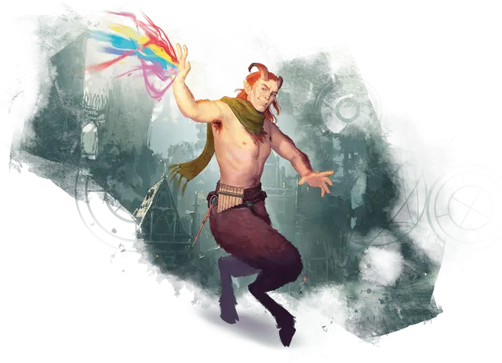

Сатир
Satyr

Родом из Страны Фей — царства чистых эмоций - сатиры живут за счет энергии веселья. Они похожи на эльфов, но имеют козлиные ноги, раздвоенные копыта и бараньи или козлиные рога. Магия Страны Фей наделила их врожденной способностью выступать, радоваться и сопротивляться магическому вторжению. Обычно их можно встретить в Стране Фей, но в действительности сатиры блуждают по многим планам существования, чаще всего по Материальному плану. Там они стремятся привнести частичку блеска своего родного плана в другие миры.
Особенности сатира
Вы обладаете следующими особенностями.
Увеличение характеристик. Выберете одно из: (а) Значение одной характеристики по вашему выбору увеличивается на 2, а другой — на 1; (б) Значение трёх различных характеристик по вашему выбору увеличивается на 1.
Скорость. Ваша базовая скорость ходьбы — 35 футов.
Вид существа. Вы — Фея.
Размер. Ваш размер — Средний.
Таран. Вы можете использовать свою голову и рога, для нанесения безоружных ударов. Когда вы атакуете ими, вы наносите 1к6 + ваш модификатор Силы дробящего урона, вместо обычного для безоружного удара количества дробящего урона.
Сопротивление магии. Вы с преимуществом совершаете спасброски от заклинаний.
Зрелищные прыжки. Каждый раз, когда вы совершаете прыжок в длину или высоту, вы можете бросить к8 и прибавить выпавшее число к количеству футов, которое вы можете преодолеть прыжком, даже если прыгаете с места. Это дополнительное расстояние стоит передвижение, как и обычное.
Гуляка. Как воплощение веселья, вы получаете владение навыками Выступление и Убеждение, а также получаете владение одним музыкальным инструментом по вашему выбору.
Языки. Ваш персонаж может говорить, читать и писать на Общем и еще одном языке, который по вашему мнению подходит для персонажа.